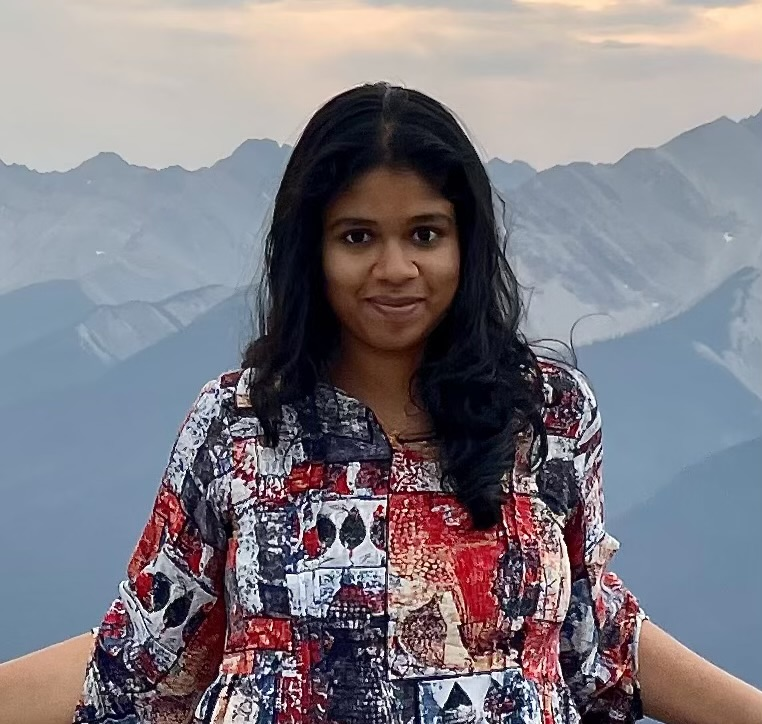

Janani Sundaresan
Faculty Fellow at NYU
Computer Science
js16503@nyu.edu

About Me
I am a Faculty Fellow at the Courant Institute of Mathematics in New York University. I am fortunate to be hosted by Prof. Aaron Bernstein and Prof. Sanjeev Khanna. I received my PhD in 2026 from the University of Waterloo CS theory group, under the guidance of Prof. Sepehr Assadi. I am interested in sublinear and streaming algorithms, and communication complexity.
Previously, I was an undergraduate at IIT Madras where I worked with Jayalal Sarma. I also interned at Microsoft Research under Ravishankar Krishnaswamy.
Publications
Better Bounds for Semi-Streaming Single-Source Shortest Paths
with Gary Hoppenworth and Sepehr Assadi
SODA 2026
Coloring Graphs with Few Colors in the Streaming Model
with Sepehr Assadi and Helia Yazdanyar
SODA 2026
Distributed Triangle Detection is Hard in Few Rounds
with Sepehr Assadi
FOCS 2025 ★ Invited to SICOMP special issue for FOCS 2025 papers
Settling the Pass Complexity of Approximate Matchings in Dynamic Graph Streams
with Sepehr Assadi, Soheil Behnezhad, Christian Konrad and Kheeran K. Naidu
SODA 2025 ★ Invited to TALG special issue for SODA 2025 papers
JACM 2026
O(log log n) Passes is Optimal for Semi-Streaming Maximal Independent Set
with Sepehr Assadi, Christian Konrad and Kheeran K. Naidu
STOC 2024 ★ Invited to SICOMP special issue for STOC 2024 papers
Hidden Permutations to the Rescue: Multi-Pass Semi-Streaming Lower Bounds for Approximate Matchings
with Sepehr Assadi
FOCS 2023
(Noisy) Gap Cycle Counting Strikes Back: Random Order Streaming Lower Bounds for Connected Components and Beyond
with Sepehr Assadi
STOC 2023
Look Before, Before You Leap: Online Vector Load Balancing with Few Reassignments
with Varun Gupta, Ravishankar Krishnaswamy and Sai Sandeep
ITCS 2023
On the Computational Power of Programs over BA_2 Monoid
with Manasi S. Kulkarni and Jayalal Sarma
LATA 2021